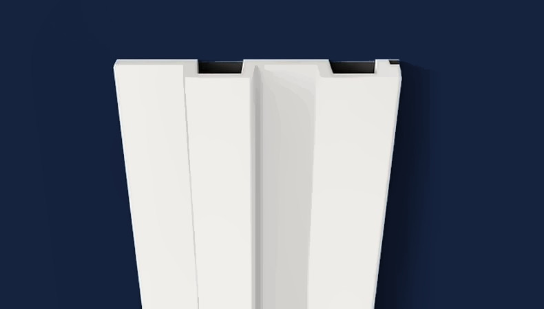
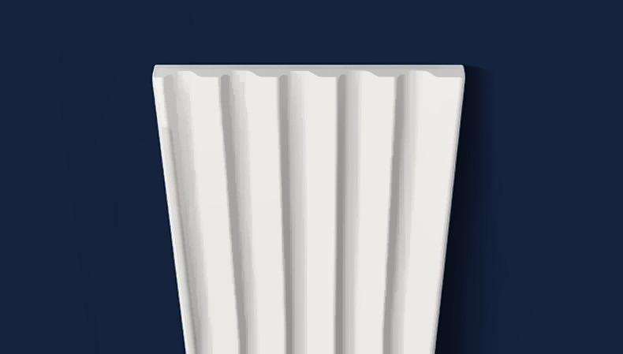
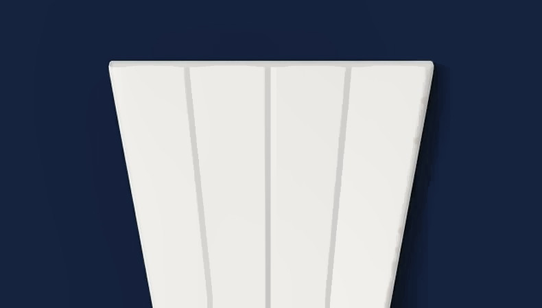
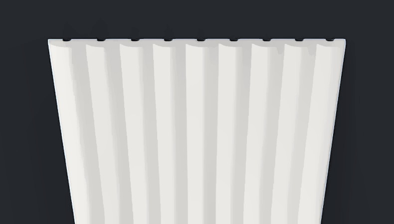
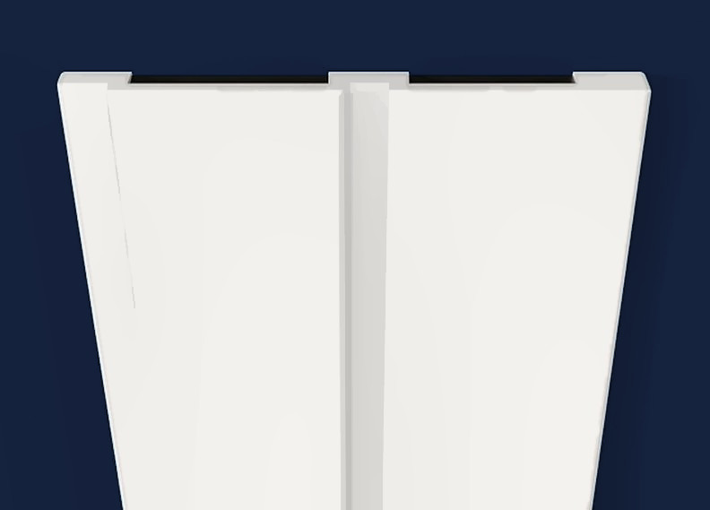
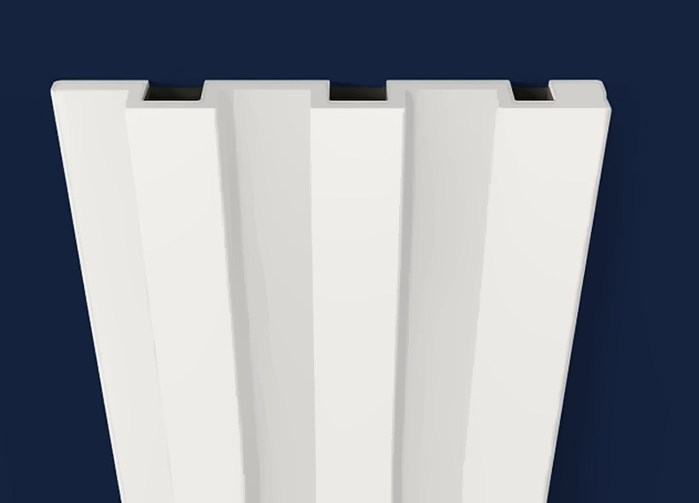
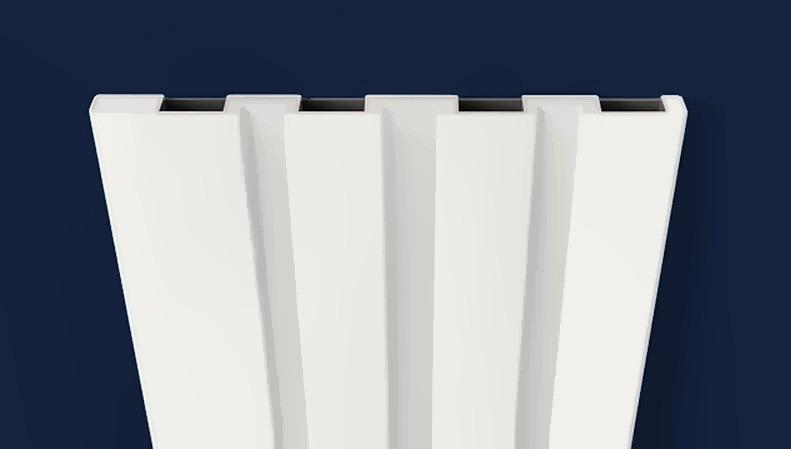

Реечная панель GS 2 белая под покраску, 120×20×3000 мм
2 широкие рейки с глубоким пазом, 120×20×3000 мм, дюрополимер, под покраску — белая, красится в любой цвет

Профиль (сечение)
Вид с торца в масштабе: ширина 120 мм, толщина 20 мм. Рельеф снят с каталога производителя.
Характеристики
| Артикул | GS 2 |
| Тип | Реечная панель |
| Ширина | 120 мм |
| Толщина | 20 мм |
| Длина | 3000 мм |
| В коробке | 13 шт |
| Материал | дюрополимер (полистирол высокой плотности) |
| Пожарная опасность | класс Г2 |
| Покрытие | белый грунт, под покраску |
| Производитель | ARTDEC (Казахстан) |
О товаре
GS 2 — стеновая реечная панель ARTDEC (декоративные рейки для стен, ламели) из дюрополимера — полистирола высокой плотности, 2 широкие рейки с глубоким пазом. Длина 3 м закрывает стену до потолка без горизонтального стыка; при большей высоте панели стыкуются по длине. Куда ставят: ТВ-зона, изголовье кровати, прихожая, стена за диваном, перегородки.
Панель поставляется белой, под покраску: красится в любой цвет вместе со стеной, стыки между панелями шпаклюются. Монтаж на клей (жидкие гвозди), в среднем один тюбик на 5 панелей.
Сколько нужно: ширина стены ÷ 120 мм = число панелей в ряд, плюс запас 10% на подрезку. Точный расчёт с плинтусом и карнизом — в 3D-расчёте стены.
Ещё в разделе «Реечные панели»






Заявка
Ответим с ценой, наличием и сроком в рабочее время. Удобнее всего — позвонить +7 999 204-10-47 или написать в Telegram @IuliiaUsenko.